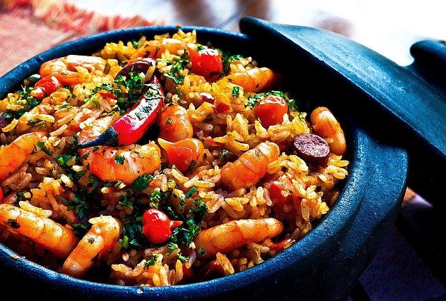

para acortar los tiempos de cocción, elija mejillones enlatados o mariscos. Si no tiene azafrán puede usar curry.
Preparación
En una olla saltee el ajo con un poco de manteca y luego coloque los mejillones bien limpios.
Afregue el vino y cocine a fuego moderado y con la olla tapada; los mejillones estan cocinados cuando se abren.
Una vez abiertos los mejillones retírelos de la olla, tamice el fondo de cocción y viértalos en otra cacerola; añada la crema y deje cocinar hasta que la salsa se reduzca a la mitad.
Baje el fuego, agregue el azafrán, salpimiente e incorpore el queso, batiéndolo hasta lograr una crema espumosa.
Retire entonces los mejillones de sus cáscaras y añádalos a esta salsa.
En abundante agua hirviendo cocine los tallarines al dente, luego cuele, bañe con salsa bien caliente y sirva.
Pesto fácil
Ingredientes
400 g de moñitos
1 paquete de albahaca
4 tomatitos cherry
3 dientes de ajo pelados y sin su germen
1 vaso y 1/2 de aceite de oliva
1 puñadito de piñones
30 g de queso parmesano rallado
Preparación
Lave y saque las hojas de la albahaca, descarte los tallos y reserve las hojitas tiernas para decorar.
Coloque la albahaca en la procesadora junto con los piñones, el ajo, el queso, y 3 cucharadas de aceite de oliva.
Reduzca todo a un puré liso y agregue aciete de a poco mientras sigue procesando hasta que emulsione bien.
agregue sal y pimienta a gusto y procese una vez más.
Cocine la pasta, agregue la salsa.
Corte los tomates cherry en tozos y mezle antes de servir en plato
Tagliatellis a los 3 colores
Ingredientes
400 g de tagliatellis (o nidos al huevo)
1 aji rojo y 1 aji amarillo
3 zapallitos
10 aceitunas negras
1 diente de ajo
1 pote de yogur
2 cucharadas de crema
Pimenton y perejil
1 dedal de azafrán
Queso rallado
Aceite, sal y pimienta
Preparación
Pele el ajo, dorelo en una cacerola con dos cucharadas de aceite y aplástelo, retirándolo luego.
Pele los zapallitos y los ajies cortando todo en bastoncitos, añada todo en la cacerola donde se doro el ajo y saltee todo a fuego fuerte.
Agregue sal y pimienta, baje el fuego y cocine unos 20 minutos.
Añada luego el pimentón, el yogur. el perejil(picado) y la crema.
Retire los carozos de las aceitunas píquelas e incorpórelas.
Entre tanto, en abundante agua hirviendo con sal, añada azafrán y cocine al punto deseado los tagliatelis.
Cuélelos, mezcle con la salsa bien caliente, agregue el queso rallado y sirva de inmediato.

Arroz con mariscos
Ingredientes
300 g de arroz
300 g de camarones
1 lata mejillones
1 lata de almejas al natural
5 cucharadas de aceite
4 cucharadas de pure de tomate
1 diente de ajo picado
Perejil picado
1/2 aji morron
1/2 chorizo seco
2 aji picante
Preparación
En una cacerola ponga 3 cucharadas de aceite, el ajo, el aji morron coratado en tiras finas, agregue 172 chorizo seco cortado en rodajas, el pure de tomátes, el perejil y 1 cucharon de agua caliente, salpimiente y cocine 10 minutos a fuego moderado con la cacerola tapada.
Luego agregue los camarones, los mejillones y las almejas y cocine 5 minutos más.
Aparte cocine el arroz y una vez listo colóquelo en una fuente y agregue todo el preparado anterior, rocie con un chorrito de aceite decore con aji picante y sirva bien caliente.